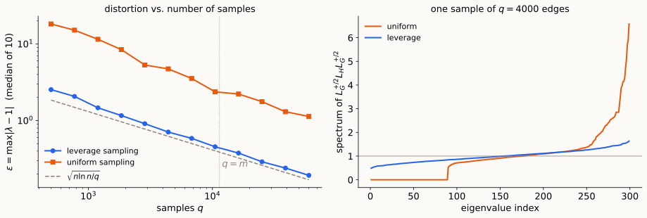
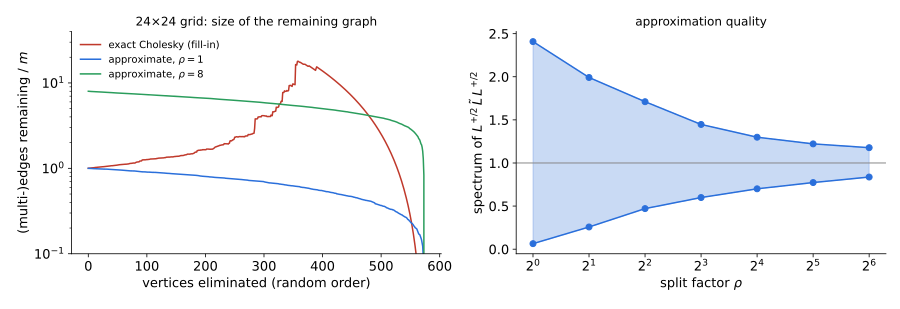

Leverage scores, importance sampling,
and a regret-bound proof of matrix concentration
A reweighted subgraph \(H\) of \(G\) is an \(\varepsilon\)-spectral sparsifier if \[(1-\varepsilon)\,L_G\ \preceq\ L_H\ \preceq\ (1+\varepsilon)\,L_G .\]
Example: expanders sparsify \(K_n\). A non-bipartite \(d\)-regular Ramanujan graph has \(L\)-spectrum in \(d\pm2\sqrt{d-1}\) on \(\mathbf 1^\perp\), and \(L_{K_n}=nI\) there. So \(\frac nd\,G\) is an \(\varepsilon\)-sparsifier with \(\varepsilon=\frac{2\sqrt{d-1}}d<\frac2{\sqrt d}\): about \(\frac{2n}{\varepsilon^2}\) edges instead of \(\binom n2\).
For \(v_1,\dots,v_m\in\mathbb R^n\) with \(M=\sum_iv_iv_i^\top\) (rows of \(A\), \(M=A^\top A\)), the leverage score of \(v_i\) is \(\ \ell_i=v_i^\top M^+v_i .\)
Three readings:
Properties: \(0\le\ell_i\le1\); \(\ \sum_i\ell_i=\operatorname{rank}M=:r\); \(\ \ell_i=1\) iff removing \(v_i\) drops the rank.
Graphs. \(A=W^{1/2}B\), \(M=L\), \(v_e=\sqrt{w_e}\,b_e\): \(\ \ell_e=w_e\,R_{\rm eff}(e)\). Foster’s theorem is \(\sum_e\ell_e=n-1\); \(\ \ell_e=1\) iff \(e\) is a bridge.
Statistically: each edge measures a potential difference, \(y_e=x_u-x_v+\text{noise}\) of variance \(\frac1{w_e}\); the fit solves \(Lx=B^\top Wy\), and \(\ell_e\) is how much edge \(e\)’s own measurement fixes its fitted difference. A bridge is unchecked; an edge in a dense region is corroborated by many paths. Sampling by leverage keeps the measurements the others cannot predict.
In isotropic coordinates, a reweighting \(\widetilde M=\sum_is_iv_iv_i^\top\) satisfies \[(1-\varepsilon)M\preceq\widetilde M\preceq(1+\varepsilon)M\iff(1-\varepsilon)\Pi\preceq\sum_is_i\,u_iu_i^\top\preceq(1+\varepsilon)\Pi .\]
Leverage sampling (Spielman–Srivastava 2008). Draw \(i_1,\dots,i_q\) i.i.d. with \(p_i=\ell_i/r\). Output \[\widetilde M=\sum_{t=1}^q\frac{v_{i_t}v_{i_t}^\top}{q\,p_{i_t}} .\] Graphs: sample edge \(e\) with \(p_e=\frac{w_eR_{\rm eff}(e)}{n-1}\),
and keep it with weight \(\ w_e\cdot\frac{\#\{t:i_t=e\}}{q\,p_e}\).
In isotropic coordinates the samples are \(Y_t=\dfrac{u_{i_t}u_{i_t}^\top}{q\,p_{i_t}}\): \[\mathbb EY_t=\frac\Pi q,\qquad 0\preceq Y_t\preceq\rho\,\Pi,\qquad\rho=\|Y_t\|=\frac{\ell_i}{q\,\ell_i/r}=\frac rq .\] Moreover \(\operatorname{tr}\sum_tY_t=r\) exactly, for every sample.
Theorem. For \(\varepsilon\le1\) and \(r\ge2\): with \(q=36\,r\ln r/\varepsilon^2\) samples, with probability \(\ge\frac13\), \(\ (1-\varepsilon)M\preceq\widetilde M\preceq(1+\varepsilon)M\). Graphs: \(O(n\log n/\varepsilon^2)\) edges.

Theorem (Lecture 10). If \(\eta M_t\preceq I\) for all \(t\), then the MMWU plays with center \(C\) satisfy, for every \(U\in\Delta_n\), \[\Big\langle\sum_tM_t,U\Big\rangle\ \le\ \sum_t\langle M_t,X_t\rangle+\eta\sum_t\langle M_t^2,X_t\rangle+\frac{D(U\Vert C)}\eta .\]
Proof. Let \(\Phi_t=\operatorname{tr}\exp(\log C+\eta S_t)\), so \(\Phi_0=1\) and \(X_t=e^{\log C+\eta S_{t-1}}/\Phi_{t-1}\).
Work on \(\operatorname{im}M\) (\(\dim r\)) with the uniform center \(C=\Pi/r\), gains \(Y_t\), and \(\eta=\varepsilon/\rho\) (so \(\eta Y_t\preceq I\)). Since \(Y_t^2\preceq\rho Y_t\): \[\lambda_{\max}\Big(\sum_tY_t\Big)\ \le\ (1+\eta\rho)\sum_t\langle Y_t,X_t\rangle+\frac{\ln r}\eta\qquad\text{for every sequence of samples.}\]
Take expectations. \(X_t\) depends only on \(Y_1,\dots,Y_{t-1}\), and \(Y_t\) is a fresh sample: \[\mathbb E\big[\langle Y_t,X_t\rangle\,\big|\,Y_{<t}\big]=\Big\langle\frac\Pi q,X_t\Big\rangle=\frac1q .\] So \[\mathbb E\,\lambda_{\max}\Big(\sum_tY_t\Big)\ \le\ 1+\varepsilon+\frac{\rho\ln r}\varepsilon=1+\varepsilon+\frac{r\ln r}{q\,\varepsilon}\ \le\ 1+2\varepsilon\] for \(q\ge\frac{r\ln r}{\varepsilon^2}\).
The regret bound is deterministic; randomness enters only through one conditional expectation per round. The width enters as \(\rho\ln r\): linear, thanks to local norms.
Lower tail: the loss version (plays \(X_t'\propto e^{-\eta S_{t-1}}\)) gives \[\lambda_{\min}\Big(\sum_tY_t\Big)\ \ge\ (1-\eta\rho)\sum_t\langle Y_t,X'_t\rangle-\frac{\ln r}\eta,\qquad\mathbb E\,\lambda_{\min}\ \ge\ 1-2\varepsilon .\]
From expectation to probability. \(\operatorname{tr}\sum_tY_t=r\) exactly, so the average eigenvalue is \(1\): \[\lambda_{\max}-1\ \ge\ 0\ \ \text{and}\ \ 1-\lambda_{\min}\ \ge\ 0\quad\text{always}.\] Markov on each: \(\Pr[\lambda_{\max}-1\ge6\varepsilon]\le\frac13\) and \(\Pr[1-\lambda_{\min}\ge6\varepsilon]\le\frac13\). Rescaling \(\varepsilon\) gives the theorem (\(q=36\,r\ln r/\varepsilon^2\), probability \(\ge\frac13\)).
Since \(L^+=L^+LL^+=L^+B^\top WBL^+\), \[R_{\rm eff}(u,v)=\big\|W^{1/2}BL^+(\mathbf 1_u-\mathbf 1_v)\big\|^2 :\] a distance between columns of the \(m\times n\) matrix \(W^{1/2}BL^+\).
Batson–Spielman–Srivastava (2009). Every graph has an \(\varepsilon\)-sparsifier with \(O(n/\varepsilon^2)\) edges, found deterministically: \(\ d(n-1)\) edges give condition number \(\frac{d+1+2\sqrt d}{d+1-2\sqrt d}\) (“twice-Ramanujan”).
Ultra-sparsifier. \(H\) = spanning tree + \(\tilde O(m/k)\) extra edges, with \(\ L_H\preceq L_G\preceq k\,L_H\).
One level of the recursion:
| running time (\(\times\log(1/\varepsilon)\)) | |
|---|---|
| Spielman–Teng 2004 | \(m\log^{c}n\) |
| Koutis–Miller–Peng 2010, 2011 | \(m\log^2n\), then \(m\log n\,(\log\log n)^2\) |
| Kelner–Orecchia–Sidford–Zhu 2013 | \(m\log^2n\,\log\log n\) (no recursion) |
| Lee–Sidford 2013 | \(m\log^{3/2}n\,\sqrt{\log\log n}\) |
| Cohen–Kyng–Miller–Pachocki–Peng–Rao–Xu 2014 | \(m\sqrt{\log n}\,(\log\log n)^{O(1)}\) |
| Kyng–Sachdeva 2016 | \(m\log^3n\) (sampling only) |
| Jambulapati–Sidford 2021 | \(m(\log\log n)^{O(1)}\) |
Eliminating vertex \(v\) (one step of Cholesky) writes \(L=d_v\,c_vc_v^\top+L'\), with \(c_v=\mathbf 1_v-\sum_u\frac{w_{vu}}{d_v}\mathbf 1_u\), and the Schur complement \[L'=L-\mathrm{star}(v)+\mathrm{clique}(v),\qquad \mathrm{clique}(v)=\sum_{\{u,u'\}\subseteq N(v)}\frac{w_{vu}w_{vu'}}{d_v}\,b_{uu'}b_{uu'}^\top .\]
Clique sampling. When eliminating \(v\), for each (multi-)edge \((v,u)\) sample one neighbor \(u'\) with probability \(w_{vu'}/d_v\) and add the edge \((u,u')\) with weight \(\dfrac{w_{vu}w_{vu'}}{w_{vu}+w_{vu'}}\) (nothing if \(u'=u\)).

\(24\times24\) grid, random order. Exact elimination peaks at \(18m\) edges. With \(\rho=16\), \(\ \mathrm{spec}(L^{+/2}\tilde LL^{+/2})\subseteq[0.70,1.30]\); with \(\rho=64\), \([0.84,1.18]\) (average over 4 runs).
Reading: Spielman–Srivastava; Spielman, Spectral and Algebraic Graph Theory, chapters on sparsification; Allen-Zhu–Liao–Orecchia §§1–3.
| Object | Definition |
|---|---|
| \(\varepsilon\)-sparsifier | \((1-\varepsilon)L_G\preceq L_H\preceq(1+\varepsilon)L_G\) |
| leverage score | \(\ell_i=v_i^\top M^+v_i\), \(\ M=\sum_iv_iv_i^\top\); \(\ \sum_i\ell_i=r=\operatorname{rank}M\); graphs: \(\ell_e=w_eR_{\rm eff}(e)\) |
| isotropic position | \(u_i=M^{+/2}v_i\), \(\ \sum_iu_iu_i^\top=\Pi\), \(\ \|u_i\|^2=\ell_i\) |
| leverage sampling | \(p_i=\ell_i/r\), \(\ Y_t=u_{i_t}u_{i_t}^\top/(qp_{i_t})\), \(\ \mathbb EY_t=\Pi/q\), \(\ \|Y_t\|=\rho=r/q\), \(\ \operatorname{tr}\sum Y_t=r\) |
| local-norm bound | \(\eta M_t\preceq I\): \(\ \langle\sum M_t,U\rangle\le\sum\langle M_t,X_t\rangle+\eta\sum\langle M_t^2,X_t\rangle+\frac{D(U\Vert C)}\eta\) |
| upper tail | \(\mathbb E\lambda_{\max}(\sum Y_t)\le1+\eta\rho+\frac{\ln r}\eta\) |
| resistances via JL | \(R_{\rm eff}(u,v)=\|W^{1/2}BL^+(\mathbf 1_u-\mathbf 1_v)\|^2\approx\|Z(\mathbf 1_u-\mathbf 1_v)\|^2\), \(\ Z=QW^{1/2}BL^+\) |